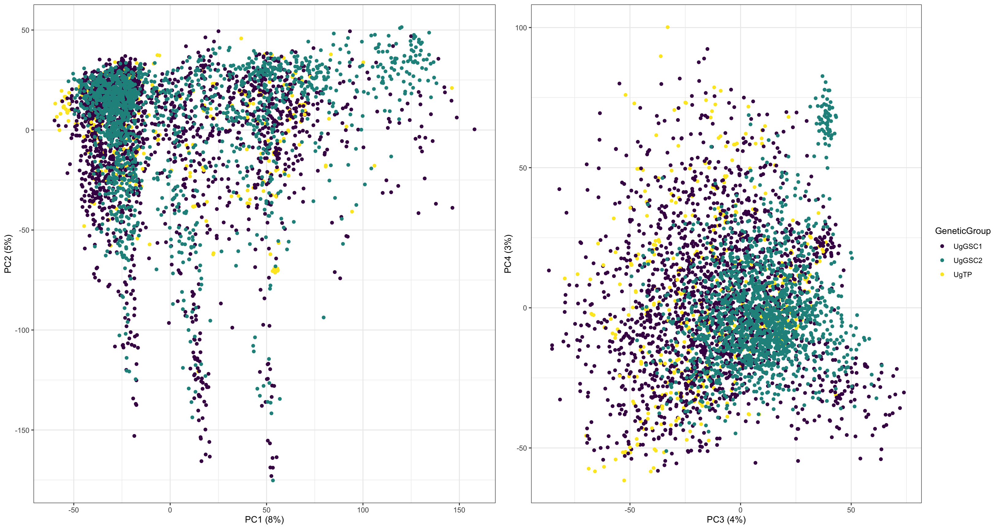

Last updated: 2020-02-13
Checks: 7 0
Knit directory: NaCRRI_2019GS/
This reproducible R Markdown analysis was created with workflowr (version 1.5.0.9000). The Checks tab describes the reproducibility checks that were applied when the results were created. The Past versions tab lists the development history.
Great! Since the R Markdown file has been committed to the Git repository, you know the exact version of the code that produced these results.
Great job! The global environment was empty. Objects defined in the global environment can affect the analysis in your R Markdown file in unknown ways. For reproduciblity it’s best to always run the code in an empty environment.
The command set.seed(20191203) was run prior to running the code in the R Markdown file. Setting a seed ensures that any results that rely on randomness, e.g. subsampling or permutations, are reproducible.
Great job! Recording the operating system, R version, and package versions is critical for reproducibility.
Nice! There were no cached chunks for this analysis, so you can be confident that you successfully produced the results during this run.
Great job! Using relative paths to the files within your workflowr project makes it easier to run your code on other machines.
Great! You are using Git for version control. Tracking code development and connecting the code version to the results is critical for reproducibility. The version displayed above was the version of the Git repository at the time these results were generated.
Note that you need to be careful to ensure that all relevant files for the analysis have been committed to Git prior to generating the results (you can use wflow_publish or wflow_git_commit). workflowr only checks the R Markdown file, but you know if there are other scripts or data files that it depends on. Below is the status of the Git repository when the results were generated:
Ignored files:
Ignored: .DS_Store
Ignored: .Rhistory
Ignored: .Rproj.user/
Ignored: analysis/.DS_Store
Ignored: analysis/.Rhistory
Ignored: output/.DS_Store
Untracked files:
Untracked: workflowr_log.R
Note that any generated files, e.g. HTML, png, CSS, etc., are not included in this status report because it is ok for generated content to have uncommitted changes.
These are the previous versions of the R Markdown and HTML files. If you’ve configured a remote Git repository (see ?wflow_git_remote), click on the hyperlinks in the table below to view them.
| File | Version | Author | Date | Message |
|---|---|---|---|---|
| html | e532cfb | wolfemd | 2020-02-13 | Build site. |
| Rmd | ba539be | wolfemd | 2020-02-13 | Publish analyses and files for NaCRRI 2019 GS, originally done Sept. 2019. |
rm(list=ls()); gc()
library(tidyverse); library(magrittr);
blups<-readRDS(file="data/nacrri_blupsForCrossVal_91619.rds") %>%
mutate(Dataset="NoOutlierRemoval") %>%
select(Trait,Dataset,blups) %>%
bind_rows(
readRDS(file="data/nacrri_blupsForCrossVal_outliersRemoved_91619.rds") %>%
mutate(Dataset="OutliersRemoved") %>%
select(Trait,Dataset,blups))
snps<-readRDS(paste0("/workdir/mw489/ImputationEastAfrica_StageIII_91119/",
"DosageMatrix_ImputationEastAfrica_AllSamples_ReadyForGP_91419.rds"))
# Sample lists
ugC1<-read.table(paste0("/workdir/mw489/ImputationEastAfrica_StageIII_91119/",
"Subset_cassavaGBSbuild_June2016_withRef_NACCRI_CYCLE_chr1.imputed.samples"),
stringsAsFactors = F, header = F)$V1
ug11<-rownames(snps) %>% grep("^UG11",.,ignore.case = T,value = T)
ug12<-rownames(snps) %>% grep("^UG12",.,ignore.case = T,value = T)
ug13<-rownames(snps) %>% grep("^UG13",.,ignore.case = T,value = T)
ug14<-rownames(snps) %>% grep("^UG14|UG_14_",.,ignore.case = T,value = T)
# ugc14<-rownames(snps) %>% grep("^UGC14",.,ignore.case = T,value = T)
# ugc17<-rownames(snps) %>% grep("^UGC17",.,ignore.case = T,value = T)
# ugc18<-rownames(snps) %>% grep("^UGC18",.,ignore.case = T,value = T)
ugGSC1<-union(rownames(snps) %>% .[. %in% ugC1],
rownames(snps) %>% grep("^UG15F",.,ignore.case = T,value = T))
ugGSC2<-rownames(snps) %>% grep("C2_GS_2018",.,value=T,invert = F)
hasBLUPsAndSNPs<-blups %>%
unnest() %>%
select(GID) %>%
distinct %>%
filter(GID %in% c(ug11,ug12,ug13,ug14,ugGSC1)) %$%
GID
dim(snps) # [1] 20733 23431
snps %<>% .[rownames(.) %in% c(hasBLUPsAndSNPs,ugGSC2),]
dim(snps) # [1] 4120 23431
gc()MAF>1% filter
maf_filter<-function(snps,thresh){
freq<-colMeans(snps, na.rm=T)/2; maf<-freq;
maf[which(maf > 0.5)]<-1-maf[which(maf > 0.5)]
snps1<-snps[,which(maf>thresh)];
return(snps1) }
snps %<>% maf_filter(.,0.01)
dim(snps) # [1] 4120 23159Make kinships
library(rrBLUP)
K<-rrBLUP::A.mat(snps-1)
saveRDS(K,file=paste0("/workdir/mw489/NaCRRI_2019GS/",
"Kinship_NaCRRI_SamplesForGS_91719.rds"))ug11 %<>% .[. %in% rownames(K)]
ug12 %<>% .[. %in% rownames(K)]
ug13 %<>% .[. %in% rownames(K)]
ug14 %<>% .[. %in% rownames(K)]
ugGSC1 %<>% .[. %in% rownames(K)]
ugTP<-c(ug11,ug12,ug13,ug14) %>% unique
blups %<>%
rename(trainingData=blups) %>%
mutate(trainingData=map(trainingData,~filter(.,GID %in% rownames(K))))
# Note: Looks like only 15 samples with TCHART... remove
blups %<>% filter(Trait != "TCHART")
blups %<>%
mutate(seed_of_seeds=1:n(),
seeds=map(seed_of_seeds,function(seed_of_seeds,reps=5){
set.seed(seed_of_seeds);
outSeeds<-sample(1:1000,size = reps,replace = F);
return(outSeeds) }))pca<-prcomp(snps, scale=T, center=T)
pc_scores<-pca$x %>%
.[,1:50] %>%
as.data.frame %>%
rownames_to_column(var="FullSampleName") %>%
mutate(GeneticGroup=NA,
GeneticGroup=ifelse(FullSampleName %in% ugTP,"UgTP",
ifelse(FullSampleName %in% ugGSC1,"UgGSC1",
ifelse(FullSampleName %in% ugGSC2,"UgGSC2",GeneticGroup))))PC1 PC2 PC3 PC4 PC5 PC6 Standard deviation 42.66894 33.44368 28.70264 25.06732 23.58510 21.38532 Proportion of Variance 0.07861 0.04830 0.03557 0.02713 0.02402 0.01975 Cumulative Proportion 0.07861 0.12691 0.16248 0.18962 0.21364 0.23338 PC7 PC8 PC9 PC10 Standard deviation 20.46902 20.18326 19.17257 18.23462 Proportion of Variance 0.01809 0.01759 0.01587 0.01436 Cumulative Proportion 0.25147 0.26906 0.28494 0.29929
First two PCs explain about 13% of the genetic variance.
Save PCA results
saveRDS(pc_scores,file="/workdir/mw489/NaCRRI_2019GS/PCscores_NaCRRI_SamplesForGS_91719.rds")
saveRDS(pca,file="/workdir/mw489/NaCRRI_2019GS/PCA_NaCRRI_SamplesForGS_91719.rds")
rm(pca); gc()#rm(list=ls());gc()
library(tidyverse); library(magrittr); library(cowplot);
pc_scores<-readRDS("output/PCscores_NaCRRI_SamplesForGS_91719.rds")
library(viridis)
pc1v2<-pc_scores %>%
ggplot(.,aes(x=PC1,y=PC2,color=GeneticGroup)) +
geom_point() +
theme_bw() + scale_color_viridis_d() +
labs(x="PC1 (8%)",y="PC2 (5%)") + theme(legend.position = 'none')
pc3v4<-pc_scores %>%
ggplot(.,aes(x=PC3,y=PC4,color=GeneticGroup)) +
geom_point() +
theme_bw() + scale_color_viridis_d() +
labs(x="PC3 (4%)",y="PC4 (3%)")
plot_grid(pc1v2,pc3v4)
| Version | Author | Date |
|---|---|---|
| e532cfb | wolfemd | 2020-02-13 |
K<-readRDS(paste0("/workdir/mw489/NaCRRI_2019GS/",
"Kinship_NaCRRI_SamplesForGS_91719.rds"))
ug11 %<>% .[. %in% rownames(K)]
ug12 %<>% .[. %in% rownames(K)]
ug13 %<>% .[. %in% rownames(K)]
ug14 %<>% .[. %in% rownames(K)]
ugGSC1 %<>% .[. %in% rownames(K)]
ugTP<-c(ug11,ug12,ug13,ug14) %>% unique
blups %<>%
rename(trainingData=blups) %>%
mutate(trainingData=map(trainingData,~filter(.,GID %in% rownames(K))))
# Note: Looks like only 15 samples with TCHART... remove
blups %<>% filter(Trait != "TCHART")require(sommer)
require(furrr)
options(future.globals.maxSize= 1500*1024^2)
options(mc.cores=18)
plan(multiprocess)
proctime<-proc.time()
blups %>%
mutate(GEBV=future_pmap(.,function(Trait,trainingData,Dataset,...){
trndata<-trainingData %>%
mutate(GID=factor(GID,levels=rownames(K)))
fit <- mmer(fixed = drgBLUP ~1,
random = ~vs(GID,Gu=K),
weights = WT,
data=trndata)
x<-fit$U$`u:GID`$drgBLUP
gebvs<-tibble(GID=names(x),
GEBV=as.numeric(x))
saveRDS(gebvs,file=paste0("output/",
"GEBV_",Trait,"_",Dataset,"_NaCRRI_SamplesForGS_91719.rds"))
rm(fit); gc()}))
proc.time() - proctimegebvs<-list.files(path = "GEBV_91719/") %>%
grep("GEBV_",.,value = T) %>%
grep("_NaCRRI_SamplesForGS_91719.rds",.,value = T) %>%
tibble(Files=.) %>%
separate(Files,c("bs","Trait","Dataset","morebs"),"_",remove = F) %>%
select(-bs,-morebs) %>%
mutate(Files=map(Files,~readRDS(paste0("GEBV_91719/",.)))) %>%
unnest(Files)
gebvs %>%
mutate(GeneticGroup=NA,
GeneticGroup=ifelse(grepl("Ug11|Ug12|Ug13|Ug14",GID,ignore.case = T),"UgTP",
ifelse(grepl("UG15F",GID),"UgGSC1","UgGSC2"))) %>%
spread(Trait,GEBV) %>%
group_by(Dataset) %>%
nest() %>%
mutate(data=map2(data,Dataset,function(data,Dataset){
write.csv(data,
file=paste0("GEBV_NaCRRI_",Dataset,"_91719.csv"),
row.names = F) }))
R version 3.6.1 (2019-07-05)
Platform: x86_64-apple-darwin15.6.0 (64-bit)
Running under: macOS Mojave 10.14.6
Matrix products: default
BLAS: /Library/Frameworks/R.framework/Versions/3.6/Resources/lib/libRblas.0.dylib
LAPACK: /Library/Frameworks/R.framework/Versions/3.6/Resources/lib/libRlapack.dylib
locale:
[1] en_US.UTF-8/en_US.UTF-8/en_US.UTF-8/C/en_US.UTF-8/en_US.UTF-8
attached base packages:
[1] stats graphics grDevices utils datasets methods base
other attached packages:
[1] viridis_0.5.1 viridisLite_0.3.0 cowplot_1.0.0 magrittr_1.5
[5] forcats_0.4.0 stringr_1.4.0 dplyr_0.8.3 purrr_0.3.3
[9] readr_1.3.1 tidyr_1.0.0 tibble_2.1.3 ggplot2_3.2.1
[13] tidyverse_1.2.1
loaded via a namespace (and not attached):
[1] tidyselect_0.2.5 xfun_0.11 haven_2.2.0
[4] lattice_0.20-38 colorspace_1.4-1 vctrs_0.2.0
[7] generics_0.0.2 htmltools_0.4.0 yaml_2.2.0
[10] rlang_0.4.1 later_1.0.0 pillar_1.4.2
[13] withr_2.1.2 glue_1.3.1 modelr_0.1.5
[16] readxl_1.3.1 lifecycle_0.1.0 munsell_0.5.0
[19] gtable_0.3.0 workflowr_1.5.0.9000 cellranger_1.1.0
[22] rvest_0.3.5 evaluate_0.14 labeling_0.3
[25] knitr_1.26 httpuv_1.5.2 broom_0.5.2
[28] Rcpp_1.0.3 promises_1.1.0 backports_1.1.5
[31] scales_1.1.0 jsonlite_1.6 farver_2.0.1
[34] fs_1.3.1 gridExtra_2.3 hms_0.5.2
[37] digest_0.6.22 stringi_1.4.3 grid_3.6.1
[40] rprojroot_1.3-2 cli_1.1.0 tools_3.6.1
[43] lazyeval_0.2.2 crayon_1.3.4 whisker_0.4
[46] pkgconfig_2.0.3 zeallot_0.1.0 xml2_1.2.2
[49] lubridate_1.7.4 assertthat_0.2.1 rmarkdown_1.17
[52] httr_1.4.1 rstudioapi_0.10 R6_2.4.1
[55] nlme_3.1-142 git2r_0.26.1 compiler_3.6.1